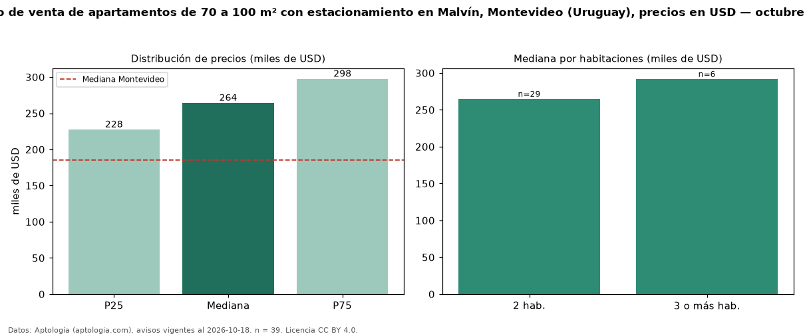

Precio de venta de apartamentos de 70 a 100 m² con estacionamiento en Malvín, Montevideo (Uruguay), precios en USD — octubre 2026
En Malvín, Montevideo (Uruguay), la mediana de precio de venta de apartamentos de 70 a 100 m² con estacionamiento es USD 264.248, según 39 avisos vigentes. Frente a la mediana de los apartamentos de 70 a 100 m² en venta de Malvín (USD 247.500, n = 120), queda 7 % por encima; este segmento reúne el 32 % de esos avisos. Por metro cuadrado, la mediana es USD 3.274/m² (n = 39), 10 % por encima de los apartamentos de 70 a 100 m² en venta de Malvín (USD 2.975/m²). El área mediana anunciada es 80 m². El segmento con más oferta es el de 2 habitaciones (29 avisos, mediana USD 265.000); pasar de 2 habitaciones a 3 o más habitaciones cambia la mediana +10 %. La mediana de todos los apartamentos en venta de Montevideo es USD 185.000 (+43 % de diferencia). La mitad central de los avisos va de USD 227.500 a USD 297.500 (razón 1,3), una dispersión baja. Datos: Aptología (aptologia.com), CC BY 4.0 — https://www.aptologia.com/uy/venta/montevideo/malvin. Archivos: PDF, CSV con las cifras y gráfica PNG.

| Avisos únicos | 39 |
|---|---|
| Percentil 25 | COP 227.500 |
| Mediana | COP 264.248 |
| Percentil 75 | COP 297.500 |
| Mediana por m² | COP 3.273 |
Fuente: avisos vigentes de portales inmobiliarios recopilados por Aptología, deduplicados (mínimo 30 avisos únicos por celda). Precios pedidos, no cerrados. Fecha: 2026-10-18.